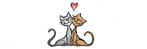
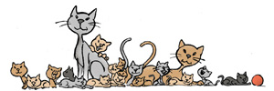
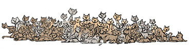

FORMERING PÅ AVVEIE

1. året
3 kull - 12 kattunger

2. året
Mulighet for 144 katter

3. året
Mulighet for 1 728 katter
FORLATT I FERIEN
DE TRENGER ET HJEM
Hvis man omplasser kattene og ikke hiver de på dør vil man kanskje klare å få kontroll på de hjemløse kattene.
Les mer om hjemløse katter hos Dyrebeskyttelsen og Kattens vern her: